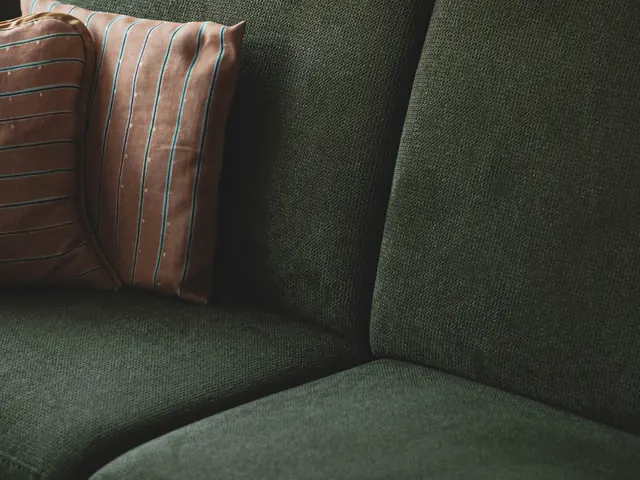
Sofás de dos y tres puestos
El mueble que más se usa de la casa. Trabajamos asientos, espaldares, brazos y cojines sueltos; las zonas de apoyo de brazos y cabeza suelen pedir más atención que el resto.
Cotizar este muebleLavado de muebles a domicilio en Bucaramanga
Lavado profesional de sofás, salas y tapicería a domicilio en Bucaramanga y su área metropolitana.
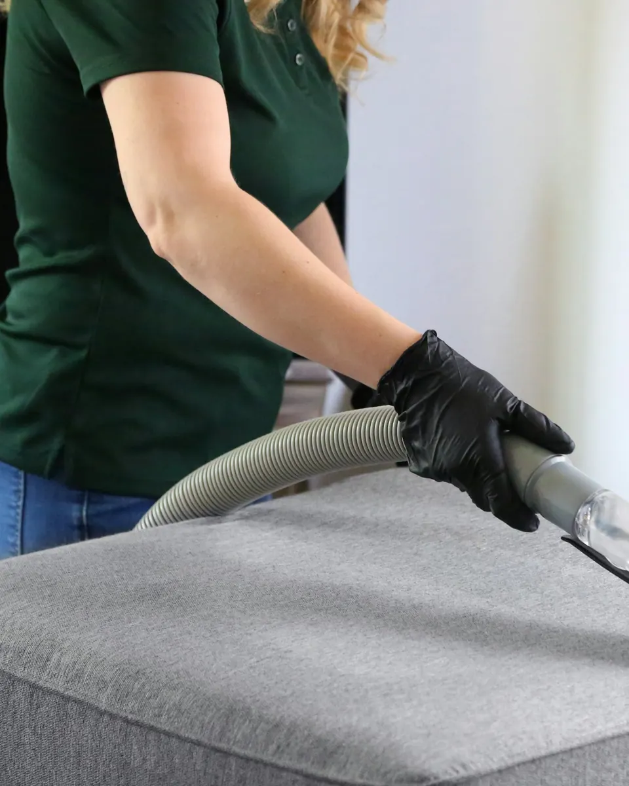
Cada pieza tiene una tela, un relleno y un uso distinto. Elige la tuya y te contamos cómo la trabajamos.

El mueble que más se usa de la casa. Trabajamos asientos, espaldares, brazos y cojines sueltos; las zonas de apoyo de brazos y cabeza suelen pedir más atención que el resto.
Cotizar este mueble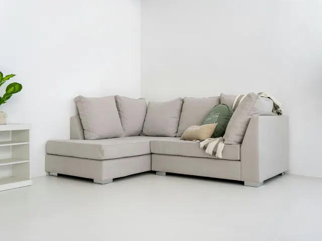
Piezas grandes con módulos que a veces se separan. Lavamos cada módulo y la esquina, que es donde más se acumula el uso, sin mover el mueble más de lo necesario.
Cotizar este mueble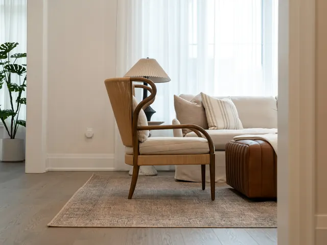
Sofá principal más sofá auxiliar o poltronas. Al hacer toda la sala en una misma visita, las piezas quedan con un aspecto parejo entre sí.
Cotizar este mueble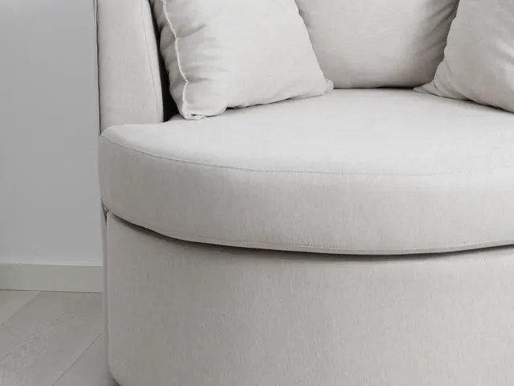
Telas claras, bouclé, lino o chenille. Antes de aplicar cualquier producto revisamos la etiqueta y hacemos una prueba en una zona poco visible.
Cotizar este mueble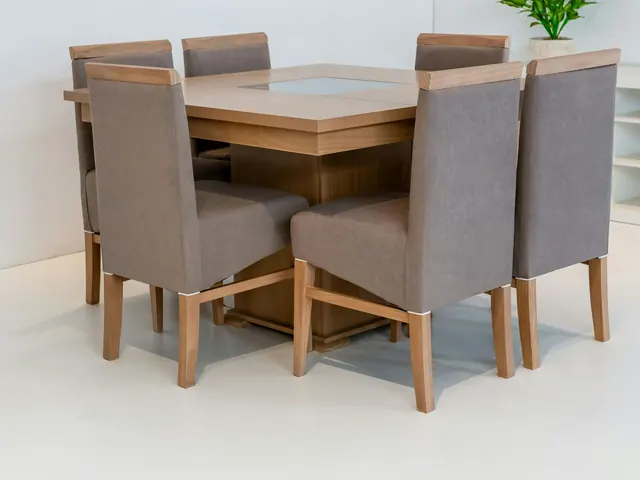
Asientos y espaldares que reciben comida, bebidas y mucho roce. Se lavan una a una, cuidando que la madera o el metal de la estructura no se mojen de más.
Cotizar este mueble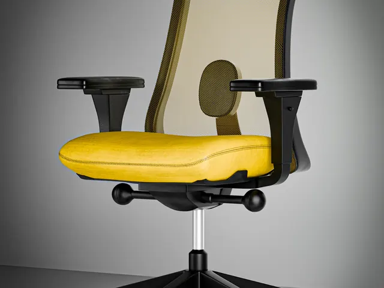
Asientos de tela que se usan ocho horas al día. Podemos atender una silla en casa o un grupo de sillas en una oficina pequeña, según disponibilidad.
Cotizar este mueble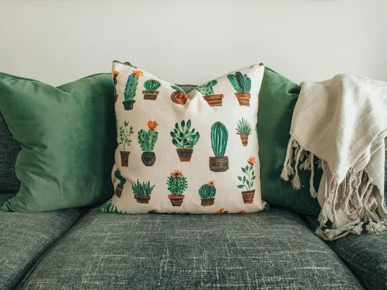
Cojines decorativos, puffs, cabeceros y otras piezas tapizadas del hogar. Se suman a la visita del mueble principal o se cotizan por separado.
Cotizar este mueble¿Tu mueble no está en la lista o son varias piezas distintas? Mándanos una foto y lo revisamos.
Enviar foto por WhatsApp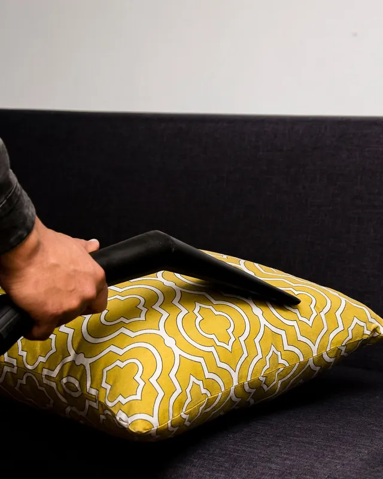
Pasar un trapo o una aspiradora doméstica ayuda, pero lo que se acumula dentro de la tela necesita otro tratamiento.
Antes de empezar te decimos qué se puede esperar de tu mueble. No prometemos quitar todas las manchas: depende de la tela, del tiempo que lleve la mancha y de lo que se haya aplicado antes.
Cinco pasos en tu casa. El tiempo total depende del tamaño del mueble y de su estado.
Revisamos la etiqueta, el tipo de tela, las costuras y las manchas. Si hay algo que no conviene mojar, te lo decimos antes.
Retiramos polvo, migas y pelo antes de usar agua, para no convertir el polvo en barro dentro de la tela.
Elegimos el producto según la fibra y lo probamos primero en una zona poco visible.
Cepillo suave para soltar la suciedad y máquina de inyección y succión para retirarla junto con el agua.
Revisamos el resultado contigo y te dejamos indicaciones de ventilación y tiempo de secado.
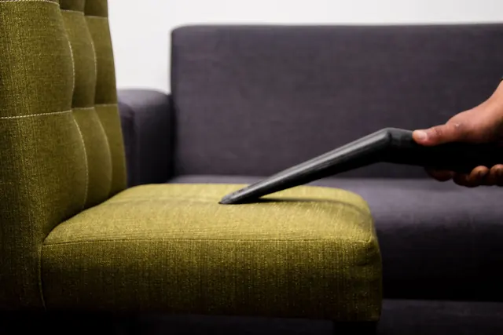
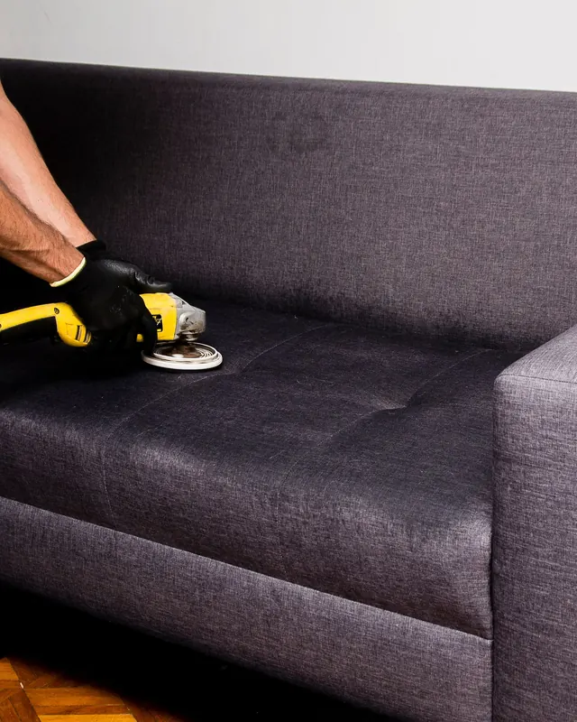
Aquí publicaremos fotos reales de trabajos, siempre del mismo mueble antes y después de lavarlo.
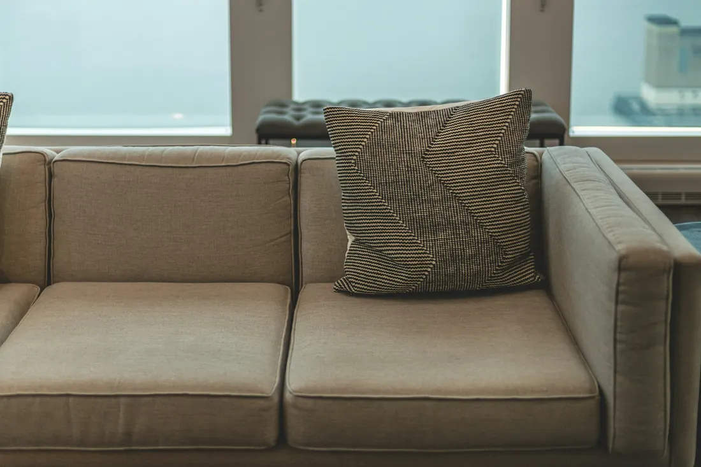
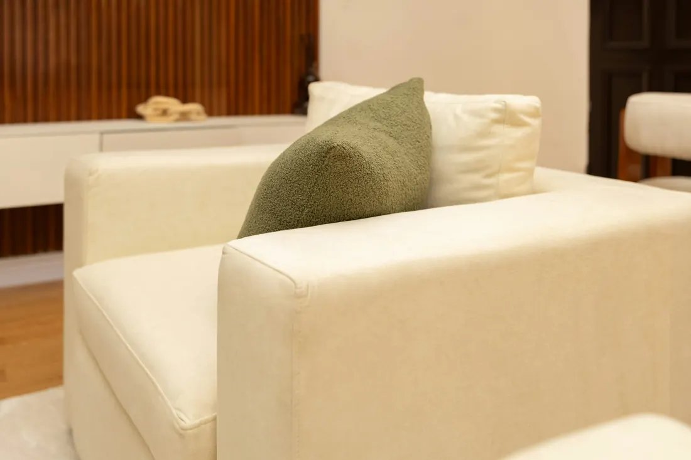
Tres formas comunes de pedir el servicio. El precio final depende de la cantidad de piezas, el tamaño y la tela.
Completa los datos y te preparamos el mensaje para WhatsApp. Lo revisas, lo cambias si quieres y tú decides cuándo enviarlo.
Si tu duda no está aquí, escríbenos con una foto del mueble.
La cobertura de cada barrio o vereda se confirma al cotizar, según la agenda del día.
Escríbenos con una foto de tu mueble y te respondemos con el precio y la fecha disponible.
Cotizar por WhatsApp